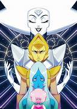

Hola, en este apartadohablaremos sobre la premisa principal de Steven Universe

Premisa Principal
La serie sigue las aventuras de Steven Universe, un niño mitad humano y mitad gema,
que vive con tres gemas alienígenas, Garnet, Amethyst y Pearl, en la ciudad ficticia
de Beach City. Juntos, protegen al mundo de amenazas extraterrestres y descubren el
legado de la madre de Steven, Rose Quartz.